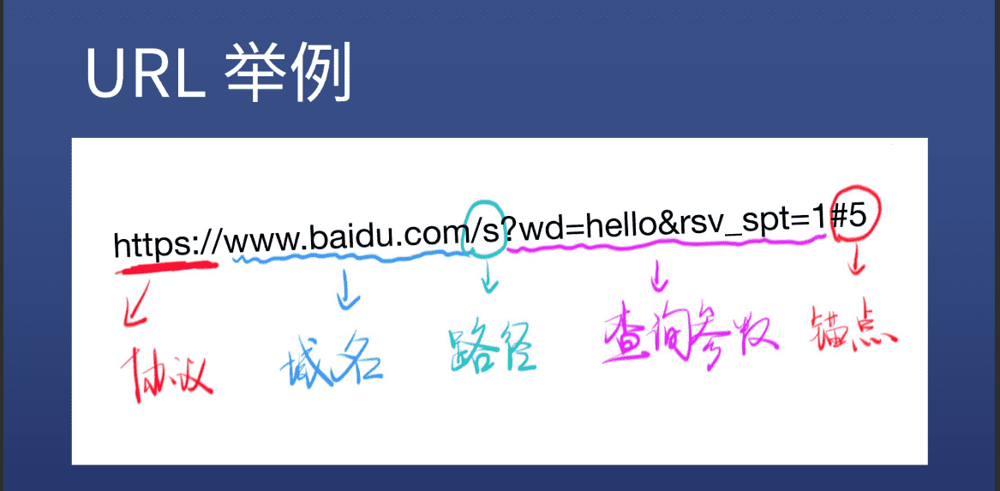
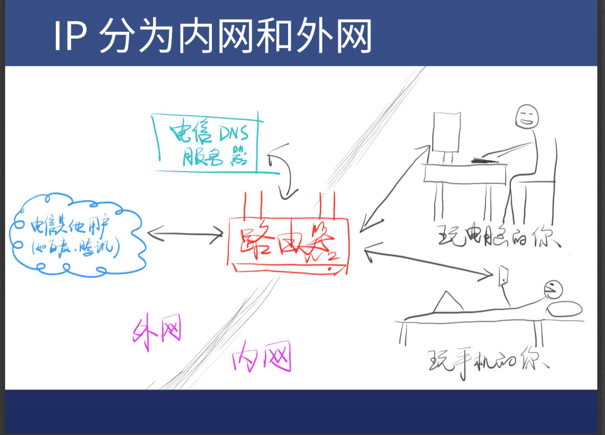

<!DOCTYPE html>
<html lang="zh-CN">

<head>
    <meta charset="UTF-8">
    <meta name="viewport" content="width=device-width, initial-scale=1.0">
    <title>浅析 URL</title>
    <link rel="stylesheet" href="URLblog.css">
</head>

<body>

</html>
<div>
    <h1>URL</h1> <strong>（Uniform Resource Locator,统一资源定位符）</strong><br>
    <h2>目录</h2>
    <a href="#1">URL的组成</a>&nbsp;&nbsp;
    <a href="#2">DNS的作用</a>&nbsp;&nbsp;
    <a href="#3">IP的作用</a>&nbsp;&nbsp;
    <a href="#4">域名是什么</a>&nbsp;&nbsp;
</div>
<br><br>
<hr>
<div>
    <p>
    <h3 id="1">URL</h3> URL(统一资源定位符)就是一个网址，作用就是会带你去找到他，具体组成为如下图</p>

    
</div>
<div>
    <h3 id="2">DNS</h3>
    <p>DNS(Domain Name System,域名服务系统)，你给他一个域名他给你一个IP，当你想要访问百度时,
        输入baidu.com会去电信问百度的IP是多少，电信就会告诉你一个IP，你就可以去访问了</p>
</div>
<div>
    <h3 id="3">IP</h3>
    <p>IP（Internet Protocol，互联网协议），IP分为内网IP和外网IP，路由器以内的手机，平板，电脑都是内网IP。
        <br> 内网IP要访问外网IP需要去问DNS</p>
    <h4>IP和DNS图解</h4>
    
</div>
<div>
    <h3 id="4">域名</h3>
    <p>域名是一个固定的外网IP，当别人想要访问我时，DNS会随机给我一个外网IP让别人来访问到我，但是这个IP不像百度那个是一个固定IP，所以我们要买一个域名（就是一个固定的外网IP地址）这样别人每次访问的就像是百度一样固定的IP地址就可以找到我了
    </p>
</div>


</body>

</html>